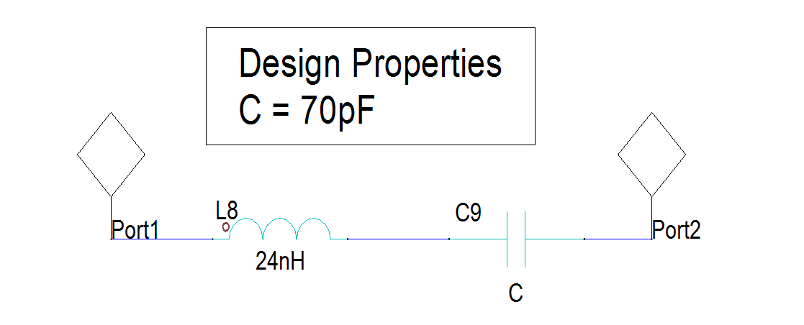
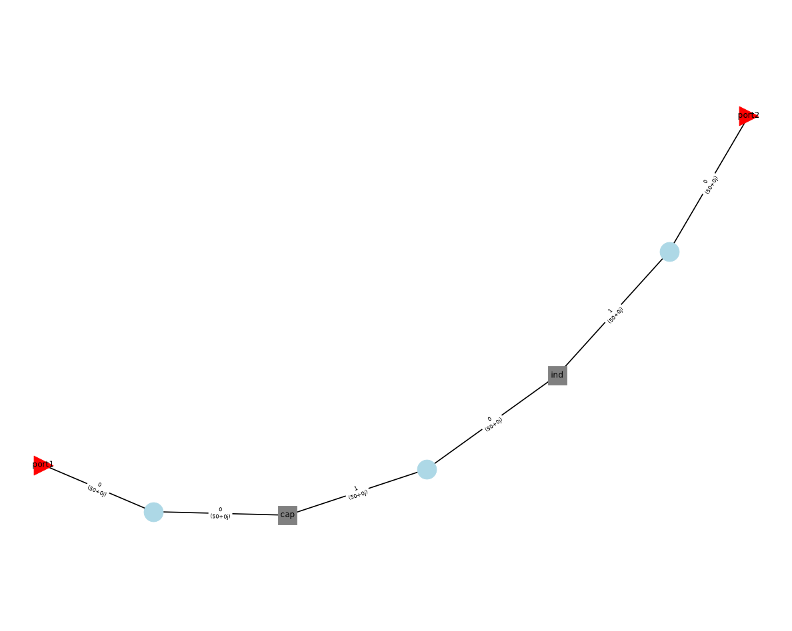
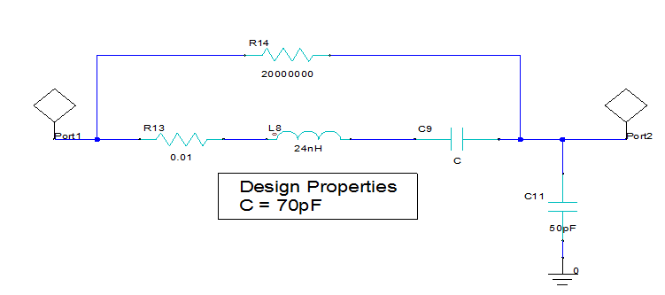
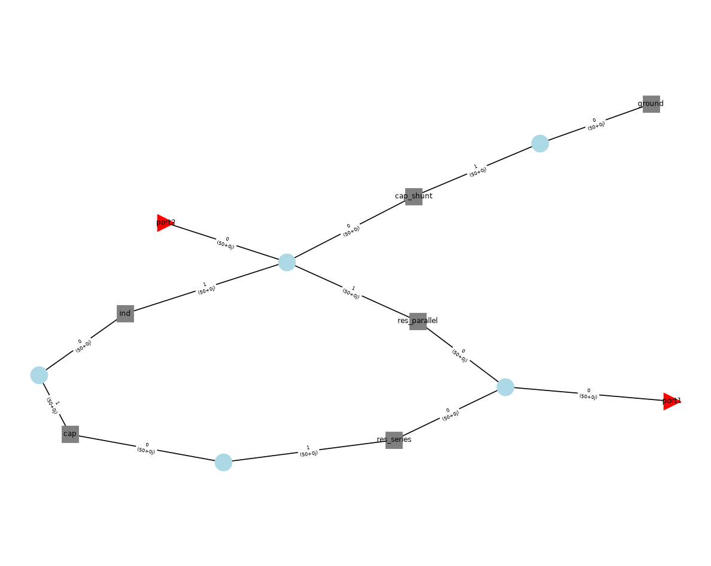
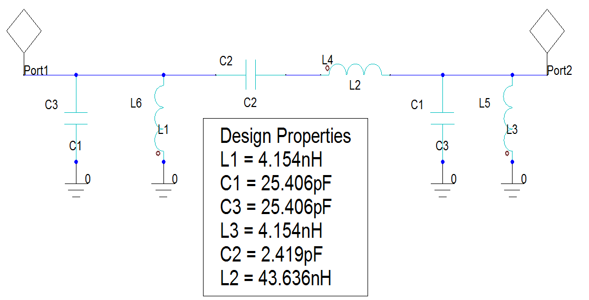
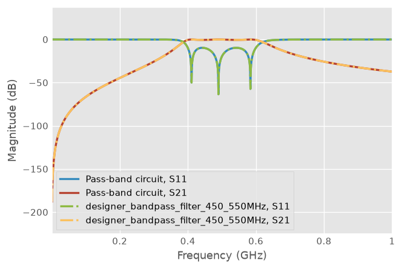

Lumped Elements Circuits#
In this notebook, we construct various network from basic lumped elements (resistor, capacitor, inductor), with the ‘classic’ and the Circuit approach. Generally the Circuit approach is more verbose than the ‘classic’ way for building a circuit. However, as the circuit complexity increases, in particular when components are connected in parallel, the Circuit approach is interesting as it increases the readability of the code. Moreover, Circuit object can be plotted using its
plot_graph() method, which is useful to rapidly control if the circuit is built as expected.
[1]:
import numpy as np # for np.allclose() to check that S-params are similar
import skrf as rf
from skrf.circuit import Circuit
from skrf.network import connect, innerconnect
rf.stylely()
LC Series Circuit#
In this section we reproduce a simple equivalent model of a capacitor \(C\), as illustrated by the figure below:

[2]:
# reference LC circuit made in Designer
LC_designer = rf.Network('designer_capacitor_30_80MHz_simple.s2p')
[3]:
# scikit-rf: manually connecting networks
line = rf.media.DefinedGammaZ0(frequency=LC_designer.frequency, z0=50)
LC_manual = line.inductor(24e-9) ** line.capacitor(70e-12)
[4]:
# scikit-rf: using Circuit builder
port1 = Circuit.Port(frequency=LC_designer.frequency, name='port1', z0=50)
port2 = Circuit.Port(frequency=LC_designer.frequency, name='port2', z0=50)
cap = Circuit.SeriesImpedance(frequency=LC_designer.frequency, name='cap', z0=50,
Z=1/(1j*LC_designer.frequency.w*70e-12))
ind = Circuit.SeriesImpedance(frequency=LC_designer.frequency, name='ind', z0=50,
Z=1j*LC_designer.frequency.w*24e-9)
# NB: it is also possible to create 2-port lumped elements like:
# line = rf.media.DefinedGammaZ0(frequency=LC_designer.frequency, z0=50)
# cap = line.capacitor(70e-12, name='cap')
# ind = line.inductor(24e-9, name='ind')
connections = [
[(port1, 0), (cap, 0)],
[(cap, 1), (ind, 0)],
[(ind, 1), (port2, 0)]
]
circuit = Circuit(connections)
LC_from_circuit = circuit.network
[5]:
# testing the equivalence of the results
print(np.allclose(LC_designer.s, LC_manual.s))
print(np.allclose(LC_designer.s, LC_from_circuit.s))
True
True
[6]:
circuit.plot_graph(network_labels=True, edge_labels=True, port_labels=True)

A More Advanced Equivalent Model#
In this section we reproduce an equivalent model of a capacitor \(C\), as illustrated by the figure below:

[7]:
# Reference results from ANSYS Designer
LCC_designer = rf.Network('designer_capacitor_30_80MHz_adv.s2p')
[8]:
# scikit-rf: usual way, but this time this is more tedious to deal with connection and port number
freq = LCC_designer.frequency
line = rf.media.DefinedGammaZ0(frequency=freq, z0=50)
elements1 = line.resistor(1e-2) ** line.inductor(24e-9) ** line.capacitor(70e-12)
elements2 = line.resistor(20e6)
T_in = line.tee()
T_out = line.tee()
ntw = connect(T_in, 1, elements1, 0)
ntw = connect(ntw, 2, elements2, 0)
ntw = connect(ntw, 1, T_out, 1)
ntw = innerconnect(ntw, 1, 2)
LCC_manual = ntw ** line.shunt_capacitor(50e-12)
[9]:
# scikit-rf: using Circuit builder
freq = LCC_designer.frequency
port1 = Circuit.Port(frequency=freq, name='port1', z0=50)
port2 = Circuit.Port(frequency=freq, name='port2', z0=50)
line = rf.media.DefinedGammaZ0(frequency=freq, z0=50)
cap = line.capacitor(70e-12, name='cap')
ind = line.inductor(24e-9, name='ind')
res_series = line.resistor(1e-2, name='res_series')
res_parallel = line.resistor(20e6, name='res_parallel')
cap_shunt = line.capacitor(50e-12, name='cap_shunt')
ground = Circuit.Ground(frequency=freq, name='ground', z0=50)
connections = [
[(port1, 0), (res_series, 0), (res_parallel, 0)],
[(res_series, 1), (cap, 0)],
[(cap, 1), (ind, 0)],
[(ind, 1), (cap_shunt, 0), (res_parallel, 1), (port2, 0)],
[(cap_shunt, 1), (ground, 0)],
]
circuit = Circuit(connections)
LCC_from_circuit = circuit.network
[10]:
# testing the equivalence of the results
print(np.allclose(LCC_designer.s, LCC_manual.s))
print(np.allclose(LCC_designer.s, LCC_from_circuit.s))
True
True
[11]:
circuit.plot_graph(network_labels=True, edge_labels=True, port_labels=True)

Pass band filter#
Below we construct a pass-band filter, from an example given in Microwaves101:

[12]:
# Reference result calculated from Designer
passband_designer = rf.Network('designer_bandpass_filter_450_550MHz.s2p')
[13]:
# scikit-rf: the filter by cascading all lumped-elements
freq = passband_designer.frequency
passband_manual = line.shunt_capacitor(25.406e-12) ** line.shunt_inductor(4.154e-9) ** \
line.capacitor(2.419e-12) ** line.inductor(43.636e-9) ** \
line.shunt_capacitor(25.406e-12) ** line.shunt_inductor(4.154e-9)
[14]:
# scikit-rf: the filter with the Circuit builder
freq = passband_designer.frequency
line = rf.media.DefinedGammaZ0(frequency=freq)
C1 = line.capacitor(25.406e-12, name='C1')
C2 = line.capacitor(2.419e-12, name='C2')
C3 = line.capacitor(25.406e-12, name='C3')
L1 = line.inductor(4.154e-9, name='L1')
L2 = line.inductor(43.636e-9, name='L2')
L3 = line.inductor(4.154e-9, name='L3')
port1 = Circuit.Port(frequency=freq, name='port1', z0=50)
port2 = Circuit.Port(frequency=freq, name='port2', z0=50)
ground = Circuit.Ground(frequency=freq, name='ground', z0=50)
connections = [
[(port1, 0), (C1, 0), (L1, 0), (C2, 0)],
[(C2, 1), (L2, 0)],
[(L2, 1), (C3, 0), (L3, 0), (port2, 0)],
[(C1, 1), (C3, 1), (L1, 1), (L3, 1), (ground, 0)],
]
circuit = Circuit(connections)
passband_circuit = circuit.network
passband_circuit.name = 'Pass-band circuit'
[15]:
passband_circuit.plot_s_db(m=0, n=0, lw=2)
passband_circuit.plot_s_db(m=1, n=0, lw=2)
passband_designer.plot_s_db(m=0, n=0, lw=2, ls='-.')
passband_designer.plot_s_db(m=1, n=0, lw=2, ls='-.')

[16]:
circuit.plot_graph(network_labels=True, port_labels=True, edge_labels=True)

[ ]: